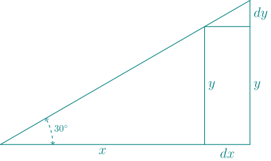
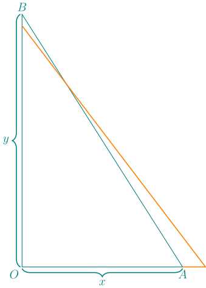

3.导数是什么
常量和变量
在微积分中，处理的都是正在增长的量及其增长率。我们将所有量分为两类：常量和变量。
常量
指那些我们认为值固定不变的量，通常用字母表开头的字母如 \(a\)、\(b\) 或 \(c\) 表示
变量
那些我们认为能够增长或变化的量，用字母表末尾的字母如 \(x\)、\(y\)、\(z\)、\(u\)、\(v\)、\(w\)，有时也用 \(t\) 表示。
变量之间的依赖
我们通常同时处理多个变量。考虑一个变量如何依赖于另一个变量：例如，
- 炮弹达到的高度依赖于到达该高度的时间；
- 一个给定面积的矩形，长度增加如何导致宽度相应减少；
- 梯子的倾斜角度变化如何影响它能达到的高度。
假设有两个这样相互依赖的变量。其中一个变量的变化会导致另一个变量随之变化。设其中一个变量为 \(x\)，依赖于它的另一个变量为 \(y\)。
假设让 \(x\) 变化，也就是说，让它增加一点，增加的量记为 \(dx\)。这样 \(x\) 就变成了 \(x + dx\)。由于 \(x\) 发生了变化，\(y\) 也会随之变化，变成 \(y + dy\)。
这里 \(dy\) 在某些情况下可能是正值，在另一些情况下是负值，并且除非特殊情况，否则不会与 \(dx\) 大小相同。
举两个例子说明
（1）设 \(x\) 和 \(y\) 分别为直角三角形（图4）的底边和高，斜边的倾斜角度固定为 \(30°\)。
假设这个三角形角度不变，边长扩大，当底边变为 \(x + dx\) 时，高则变为 \(y + dy\)。这里 \(x\) 的增加导致了 \(y\) 的增加。
新形成的三角形，高为 \(dy\)，底为 \(dx\)，与原三角形相似，显然 \(\dfrac{dy}{dx}\) 的值等于 \(\dfrac{y}{x}\) 的值。

由于角度是 \(30°\)，根据三角函数，\(\tan 30^\circ = \frac{1}{\sqrt{3}}\)：
（2）设 \(x\) 代表从墙到梯子底端的距离（图5），\(AB\) 为梯子的固定长度，\(y\) 是梯子沿墙的高度。很明显 \(y\) 依赖于 \(x\)。
如果将底部 \(A\) 拉离墙一些，顶部 \(B\) 就会下降一点。用科学的语言来说，如果把 \(x\) 增加到 \(x + dx\)，那么 \(y\) 会变成 \(y - dy\)；也就是说，当\(x\)有一个正增量时，\(y\)的增量却是负的。

变化的量具体是多少呢？比如，假设梯子足够长，当底部 \(A\) 距离墙 \(19\) 厘米时，顶部 \(B\) 刚好离地 \(1.8\) 米。现在如果把将底部往外多拉 \(1\) 厘米，顶部会下降多少？全部转换成厘米单位：\(x = 19\) 厘米，\(y = 180\) 厘米。增量 \(dx\) 为 \(1\) 厘米，即 \(x + dx = 20\) 厘米。
\(y\) 会减少多少？新的高度将为 \(y - dy\)。根据勾股定理计算出 \(y\) 的新高度能够帮助我们找到 \(dy\) 是多少。如果使用 \(l\) 表示梯子的长度，这是一个常量，那么：
首先求出梯子的长度：
新的高度，即 \(y - dy\)，满足：
由于 \(y\) 是 \(180\) 厘米，所以：
因此，我们看到 \(dx\) 增加 \(1\) 厘米导致 \(dy\) 减少了 \(0.11\) 厘米。
此时 \(dy\) 与 \(dx\) 的比例可以这样表示：
很容易看出（除了某个特定位置外），\(dy\) 的大小通常不同于 \(dx\)。
贯穿整个微分学，我们一直在寻找一种奇特的东西，即 \(dy\) 相对于 \(dx\) 的比例，尤其是在两者都无限接近零时的比例。
函数
需要注意的是，只有当 \(y\) 和 \(x\) 之间存在某种关系时，才能求出比例 \(\dfrac{dy}{dx}\)。也就是说，只要 \(x\) 发生变化，\(y\) 也会随之变化。
例如，在前面的第一个例子中，如果三角形的底边 \(x\) 变长了，那么三角形的高 \(y\) 也随之增加；在第二个例子中，如果梯子底部离墙的距离 \(x\) 增大，那么梯子所能到达的高度 \(y\) 就会相应减小，起初变化较慢，但随着 \(x\) 越来越大，变化也越来越快。在这两种情况下，\(x\) 和 \(y\) 的关系是明确的，可以用数学表达式表示，分别是
和
（其中 \(l\) 是梯子的长度）。
但如果 \(x\) 仍代表梯子底部离墙的距离，而 \(y\) 却不是梯子的高度，而是墙的厚度、墙中的砖块数量，或是墙建成以来的年数，那么对 \(x\) 的任何改变自然不会引起 \(y\) 的任何变化。在这种情况下，\(\dfrac{dy}{dx}\) 完全没有意义，也无法写出它的表达式。
每当我们使用微分 \(dx\)、\(dy\)、\(dz\) 等时，就意味着 \(x\)、\(y\)、\(z\) 等之间存在某种关系，这种关系被称为关于 \(x\)、\(y\)、\(z\) 等的函数。
比如上面给出的两个表达式：\(\dfrac{y}{x} = \tan 30°\) 和 \(x^2 + y^2 = l^2\)，就是关于 \(x\) 和 \(y\) 的函数。
这类表达式隐含地（也就是未明显地）给出了用 \(y\) 表示 \(x\) 或者用 \(x\) 表示 \(y\) 的方法，因此它们被称为 \(x\) 和 \(y\) 的隐函数。
它们可以分别改写为以下形式：
以及
最后列出的这些表达式清楚地给出了 \(y\) 用 \(x\) 表示，或 \(x\) 用 \(y\) 表示的形式，因此它们被称为 \(x\) 或 \(y\) 的显函数。
例如，\(x^2 + 3 = 2y - 7\) 是一个关于 \(x\) 和 \(y\) 的隐函数；它可以写成 \(y = \dfrac{x^2 + 10}{2}\)（即 \(y\) 关于 \(x\) 的显函数），或者写成 \(x = \sqrt{2y - 10}\)（即 \(x\) 关于 \(y\) 的显函数）。
可以看出，一个关于 \(x\)、\(y\)、\(z\) 等的显函数，其实就是某个量，它的值会随着 \(x\)、\(y\)、\(z\) 等变量一个或多个的变化而变化。 因此，
这个显函数的值被称为因变量，因为它依赖于函数中其他变量的值；
而这些其他变量则被称为自变量，因为它们的值不是由函数本身决定的。
例如，在 \(u = x^2 \sin \theta\) 中，\(x\) 和 \(\theta\) 是自变量，\(u\) 是因变量。
有时，我们并不知道几个量 \(x\)、\(y\)、\(z\) 之间的精确关系，或者不方便表达；只知道这些变量之间存在某种关系，也就是说，如果不影响其他量，就不能单独改变其中任何一个量（\(x\)、\(y\) 或 \(z\)）。这种情况下，就说它们之间存在一个关于 \(x\)、\(y\)、\(z\) 的函数。
这种函数可以用记号 \(F(x, y, z)\) 来表示（隐函数），或者写成 \(x = F(y, z)\)、\(y = F(x, z)\)、或 \(z = F(x, y)\)（显函数）。
有时候也用字母 \(f\) 或 \(\phi\) 来代替 \(F\)，比如 \(y = F(x)\)、\(y = f(x)\) 和 \(y = \phi(x)\) 其实是一回事，都表示 \(y\) 的值在某种方式下依赖于 \(x\)，只是具体依赖关系没有说明。
导数
我们把
称为“\(y\) 关于 \(x\) 的导数”。
导数实际上是一个函数，也是一个关于 \(x\) 的函数，用来描述原函数在每个点上的瞬时变化率。
对于定义域内的每一个 \(x\)，导数给出了原函数在该点处的斜率，即随着 \(x\) 的微小变化，原函数变化的速率。
这使得我们可以通过研究导数函数来了解原始函数的性质，比如在哪里增加或减少、凹凸性等。
在学校学过的普通代数中，总是在寻找某个未知量，它被称作 \(x\) 或 \(y\)；有时候要同时找出两个未知量。现在你要学会一种新的“捕猎”方式。这次不是去抓 \(x\) 或 \(y\)，而是去寻找一个叫 \(\dfrac{dy}{dx}\) 的函数。
求出 \(\dfrac{dy}{dx}\) 的过程叫做求导。
但请记住：我们要的是函数在某个点附近，\(dy\) 和 \(dx\) 都无限小的时候，在该点的变化比例。导数在某一点的真正值，是在 \(dy\) 和 \(dx\) 都趋于无穷小的极限情况下所趋近的那个值。
接下来，我们就来学习如何寻找 \(\dfrac{dy}{dx}\)。